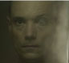

Personajes
Karin Parke [Kelly Macdonald]
La detective de policia en la ciudad de Londres. La
convocaron para tratar el caso de Jo Powers, una periodista que
recibió amenazas de muerte a través de las redes sociales
tras
criticar públicamente la inmolación de una activista
discapacitada.
Blue Colson [Faye Marsay]
Es aprendiz de investigacion y ademas experta en
tecnologia. Muy detallista y constantemente tratando de analizar y
ver lo que pasaba con las abejas con su computadora.
Siempre con los ultimos detalles. Examinando el pasado de cada
una de las posibles victimas y los sospechosos.
Shaun Li [Benedict Wong]
Es oficial de la Agencia Nacional del Crime, convocado
para ayudar en la investigacion junto
con la policia y la detective,
debido a que el caso se torna más complejo. Mientras la investigación avanza descubren una desconcertante realidad.
Rasmus Sjolberg [Jonas Karlsson]
Dueño y creador de una serie de abejas
roboticas llamados insectos drones autónomos (IDA). Artefactos mecánicos con forma de abeja que
debido al colapso y extinción de las verdaderas colmenas y colonias, han sido creados artificialmente para reemplazarlas.
Garrett Scholes [Duncan Pow]
Los “haters” en la red social son su objetivo y su
manifiesto, pero también sus cómplices. Son víctimas y asesinos
a la vez. Internet es el campo de ejecución y las palabras,
sus balas.
El problema de estas "peligrosas" armas es que
están al alcance de cualquiera.